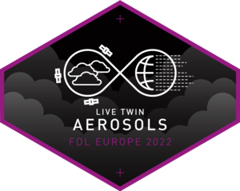
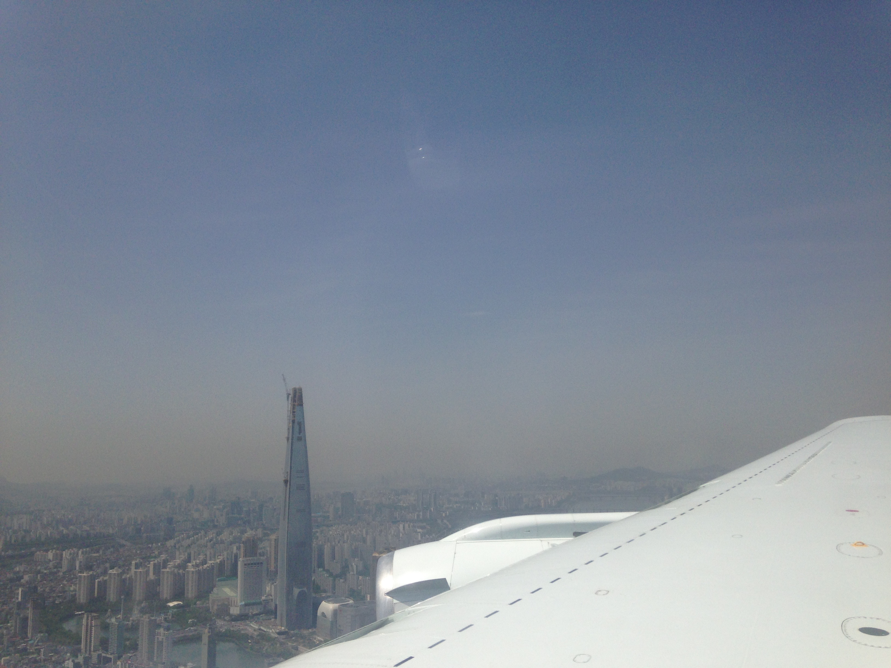
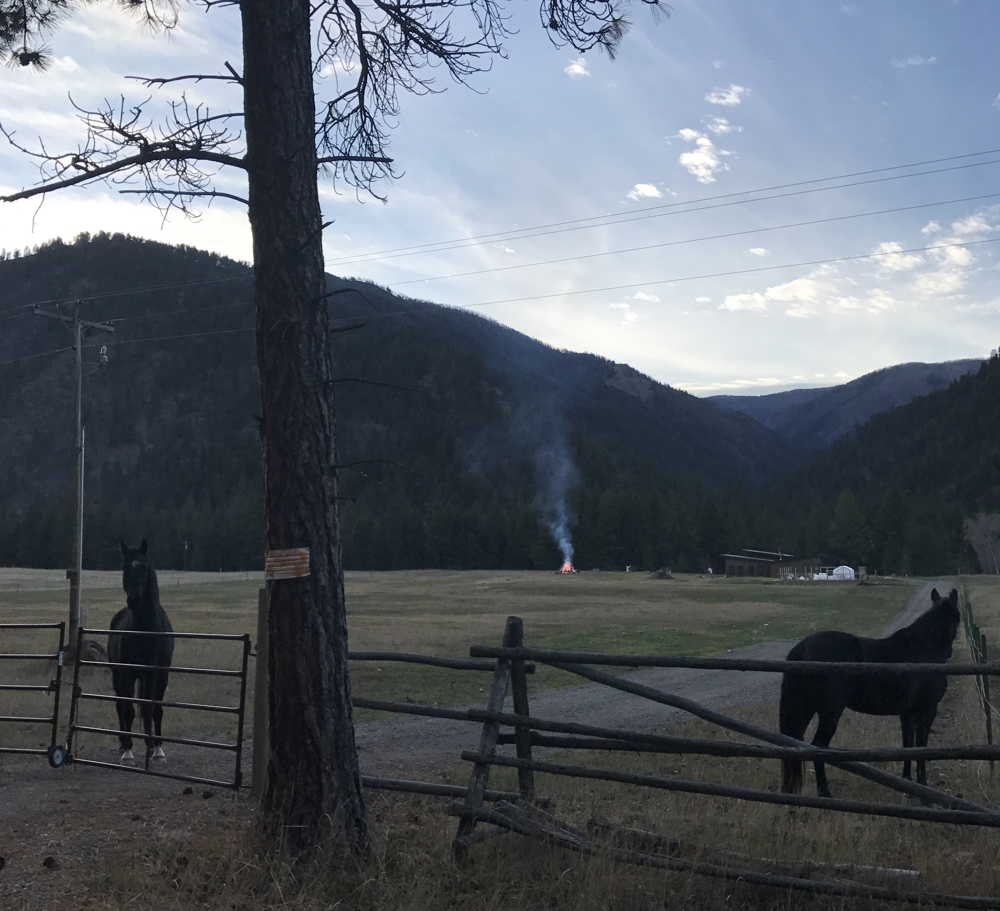
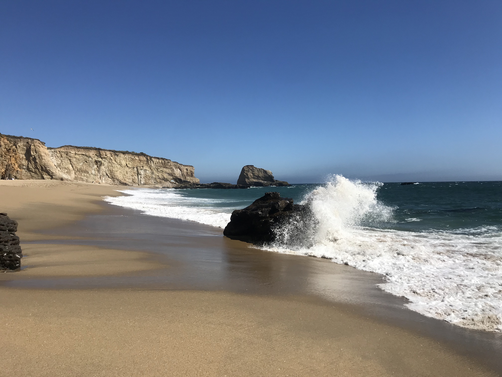

Research Sprints
Since 2019, I have collaborated with Frontier Development Laboratory on summer research sprints to apply machine learning to earth and space science challenges.
Frontier Development Laboratory Europe 2022

I was the domain lead mentor for the Aerosols team. Our team spent 8 weeks developing a data set of high‐resolution geostationary satellite images and meteorological data to improve forecasting of Pyrocumuluniumbus events using machine learning/causal methods.
NASA Frontier Development Laboratory 2019

I spent 8 weeks in Mountain View, CA, as a domain science researcher on the Forecasting Geoeffectiveness team to develop a state-of-the-art data-driven machine learning approach for the prediction of space weather phenomena.
Aircraft Field Campaigns
NASA Korean United States Air Quality Study

I participated in the field deployment of the NASA-NIER Korean-United States Air Quality Study, (NASA KORUS-AQ), carried out in South Korea in Spring of 2016. This aircraft campaign was an international effort to improve understanding of air quality in East Asia.
Laboratory Studies
NOAA 2016 FIREX Firelab Study

Forest fires are a major source of aerosols that impact both air quality and climate. During the NOAA 2016 FIREX Firelab Study at the USDA Fire Sciences Lab, I spent 2 months in Missoula, MT, collaborating with researchers from NOAA’s Chemical Sciences Division on experiments focused on a better characterization and understanding of the optical properties of black and brown carbon sourced from biomass burning.
AQUAVIT‐2 Campaign

Cirrus clouds in the upper tropical tropopause layer (TTL) regulate the amount of water vapor entering the stratosphere, where it acts as an important greenhouse gas. Because the TTL is very cold and dry, water vapor in these conditions is very challenging to measure accurately from aircraft and balloon platforms. I participated in the AQUAVIT-2 instrument inter‐comparison campaign, which took place at the AIDA Aerosol and Cloud Chamber in Karlsruhe, Germany in 2013, to systematically test state-of-the-art instrumentation for measuring atmospheric water vapor.
IsoCloud Campaigns

I participated in 4 research campaigns at the AIDA Aerosol and Cloud Chamber in Karlsruhe, Germany in 2012-2013. The IsoCloud campaigns focused on characterizing ice growth in ultra-cold cirrus clouds and the fundamental properties of isotopic water vapor at these temperatures.